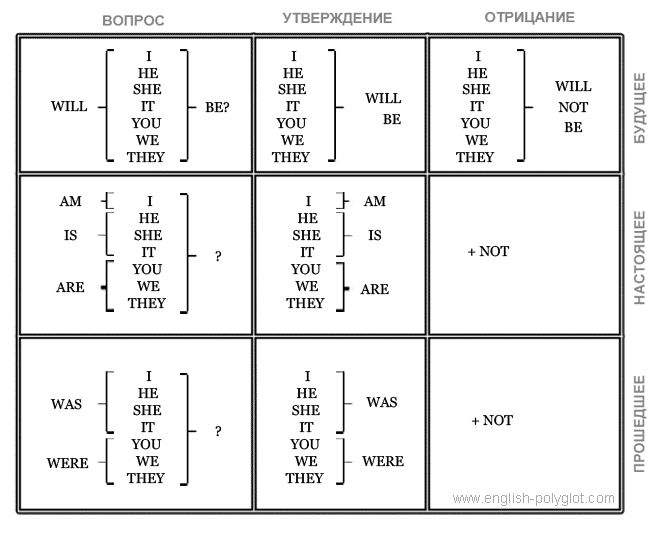

3 урок Полиглот
Таблица глагола to be
В каком возрасте нужно начинать изучение английского языка? С детских лет, когда работают образы или во взрослом возрасте, когда нам помогает аналитический ум? Сегодня мы затронем «возрастную» тему изучения второго языка.
Также мы познакомимся с глаголом to be и подробно рассмотрим все его формы. И начнем работать с окончанием – ing.

В практику 3 урока Полиглот, помимо фраз с формами глагола to be, включены 7 самых употребительных английских прилагательных.
А на десерт, смертельноопасный диалог из фильма удостоенного четырех Оскаров Старикам здесь не место. Классический пример того, как два человека разговаривают друг с другом при помощи одних вопросов.
С помощью базовой схемы глагола можно построить тысячи фраз. Но некоторые фразы, вызовут затруднения. Как, к примеру, сказать по-английски философское:
- Быть или не быть?
Или как во время знакомства спросить:
- Как тебя зовут?
Однако, оба вопроса легко задать, зная формы глагола to be.
Но прежде, чем мы начнем работу с новой схемой, вспомним первую схему – базовую таблицу глагола.
Мы помним, что при конструировании фразы нужно ответить на два вопроса. Первый вопрос: в каком времени происходит действие? Настоящем, прошедшем или будущем. И второй вопрос: какую форму имеет высказывание? Утверждение, отрицание или вопрос. Три времени и три формы высказывания дают девять возможных вариантов. Наша задача – найти правильный.
Чтобы проверить насколько Ваши навыки продвигаются к стадии автоматизма попробуйте самостоятельно перевести эти фразы и проконтролируйте правильность перевода:
+−

×
+−

×
чтобы иметь перед глазами таблицу глаголов, откройте её и отодвиньте в сторону
(обычная или транспонированная – время по оси Х). При прокрутке страницы таблица будет оставаться на месте.
(обычная или транспонированная – время по оси Х). При прокрутке страницы таблица будет оставаться на месте.
В последней фразе использован неправильный глагол:
Неправильные глаголы – одни из самых употребительных в английском языке. Чтобы освоить неправильный глагол, нужно запомнить его в двух формах. Come, к примеру, это первая форма, вторая форма – came (пришел, приходил).
- she came to me – она приходила(пришла) ко мне
В общей сложности нужно освоить 50-60 глаголов, которые охватывают 90 процентов речи. Из них половина – неправильные. Это где-то 20-30 слов. Их знание поможет нам легче комбинировать.
Продолжим переводить фразы:
Как видите, знание глаголов, не отменяет знание местоимений. Местоимения мы расположили в две группы. Первая – отвечает на вопрос: кто? а вторая – на вопросы: кого? кому?
Кто?
Кого? Кому?
Вот, в принципе, и всё, что требуется для освоения базового уровня. Достаточно лишь запомнить несколько глаголов поработать с ними при помощи базовой схемы и выучить вышеупомянутые местоимения.
И напомню, для того, чтобы этот механизм начал работать автоматически, требуется несколько раз в день прокручивать глаголы через базовую схему.
Это не требует большого напряжения сил и занимает минимум времени. По мнению Дмитрия Петрова, базовый уровень это – своеобразный «несгораемый запас». Кто-то захочет двигаться дальше, а кому-то этих знаний будет достаточно. Но, в любом случае, чтобы запас этот «не сгорел», нужно довести работу с элементами базового уровня до автоматизма.
Для облегчения тренировок используйте генератор фраз. Реплики генератора подобраны в соответствии с темами урока, а сложность реплик с каждым уроком возрастает. Не стесняйтесь проговаривать все английские фразы вслух. Так Вы задействуете и речевые механизмы головного мозга, и те механизмы, которые отвечают за слуховое восприятие.
И не слишком усердствуйте. Если Вам хватит силы воли изучать английский в течении двух часов сегодня, то завтра есть опасность не найти и 5 минут. Стоит Вам на несколько дней «выйти из языковой среды», как Ваши знания и навыки начнут улетучиваться.
С базовым уровнем – всё. Переходим на следующий уровень, назовем его условно – «базовый плюс».
И сразу же начнем изучение новой схемы, посвященной глаголу: to be – быть
Таблица глагола to be
to be – это глагол-связка, которая обозначает присутствие. Кто-то или что-то где-то находится. Или кто-то или что-то кем-то(чем-то) является.
В русском языке мы не используем это слово. Мы не говорим: я есть здесь. Мы говорим просто: я – здесь. Мы используем его только в прошедшем и будущем времени. Мы говорим: я был здесь или: я буду здесь. В английском языке этот глагол:
- to be – быть, находиться, являться
используется всегда, в том числе и в настоящем времени. То есть мы не можем сказать по-английски: я – здесь, мы говорим: я есть здесь. И вот как он работает.
Утвердительное предложение
Примеры:
- I am here – я здесь
- he is here – он здесь
- she is here – она здесь
- it is here – это здесь
Множественное число:
Примеры использования:
- we are here – мы здесь
- you are here – вы здесь
- they are here – они здесь
В английском языке существует местоимение, которое соответствует русскому местоимению ты. На ты можно обратиться к Богу, при помощи местоимения thou. Для этого местоимения существует особая форма связки – art.
Thou Art My God – ты мой Бог

Таблица глагола to be Петрова
Две схемы, базовая и глагола to be, как Вы наверное уже заметили, построены по одному принципу. Три времени: настоящее, прошедшее, будущее. И три формы высказывания: утверждение, отрицание, вопрос.
Примеры:
- I was here – я был здесь
- he was here – он был здесь
Множественное число:
- you were here – вы были здесь
- we were here – мы были здесь
- they were here – они были здесь
В будущем времени всё одинаково. Никакого различия между множественным и единственным числом:
- I will be – я буду (где-то находиться, кем-то являться)
- he will be here – он будет здесь
- you will be with me – вы будете со мной
А теперь попробуйте перевести эти фразы:
Вопросительное предложение
Теперь если мы хотим спросить и нам нужна вопросительная форма, то всё просто меняется местами. В настоящем времени:
- am I ... – являюсь ли я ...
- is he ... – находится ли он ...
- are you ... – являетесь ли вы ...
И так далее. А теперь переведите:
Если перепутать слова местами – смысл изменится кардинально. Например, если вместо вопроса is she here? сказать she is here подразумевая простой вопрос по-русски: она здесь? носитель языка воспримет эту фразу не как вопрос, а как восклицание: она уже здесь!
Та же перестановка местами (или инверсия) повторяется и в прошедшем времени:
- was I ... – находился ли я ...
- was he ... – являлся ли он ...
Как мы спросим эти фразы по-английски?
В будущем времени впереди ставится will и за ним все без исключения местоимения, а следом – частица be:
- will I be ... – буду ли я ...
- will he be ... – будет ли он ...
- will they be ... – будут ли они ...
То есть: будешь ли ты где-то находиться или кем-то являться? Итак, как мы спросим?
Здесь или сюда по-английски – here:
- he is here – он здесь
- come here – иди сюда
А там или туда – there:
- go there – иди туда
- he is there – он там
Как спросить с обычным глаголом?
Отрицательное предложение
Чтобы получить отрицательную форму, ко всему этому «хозяйству» добавляется not. В настоящем времени:
- I am not here – я не здесь
- she is not there – её там нет
В прошедшем времени – то же самое.
В будущем при отрицании добавляется will not be:
- He will not be my friend – он не будет моим другом
А теперь об отличии глагола-связки to be от всех остальных глаголов. Мы здесь не используем никаких do, did. Глагол to be имеет своеобразную форму и означает не действие, а состояние: я нахожусь, я являюсь.
То есть, все глаголы подчиняются одной схеме, кроме этого глагола. Поэтому для него есть отдельная схема. К примеру, как сказать?
То есть, дословно по-русски мы бы сказали: Он есть мой друг. Но в русском языке в настоящем времени эта связка не используется. Мы не говорим: Я есть твой друг или: Кто есть твой друг? В прошлом и будущем времени мы используем подобную связку: Он был моим другом. Или: Он будет моим другом. В английском в настоящем времени обязательно должна быть эта связка. Вот в этом принципиальная разница.
Итак, мы только что разобрали вторую схему, схему глагола to be. Теперь, важный момент.
Если ко всей этой схеме прибавить глагол с окончанием -ing – получится действие в состоянии процесса.
Действие в состоянии процесса
Если я хочу подчеркнуть, что я нахожусь в процессе, то я говорю:
- I am speaking – я говорю (сейчас)
Носитель языка может быть абсолютно неграмотным человеком и не знать времен, форм и вспомогательных глаголов. Но для него существует глагол быть и он воспринимает его буквально. Он говорит: я есть говорящий. Вот сейчас: я есть говорящий. Или вчера в это время: я был говорящим.
I was speaking – я говорил (вчера в 6 часов).
А завтра, если ты зайдешь в это время:
I will be speaking – я буду говорить (завтра в 2 часа)
То есть, эта форма оправдана, когда мы указываем конкретное время. Вчера в пять часов. Завтра после обеда. Или: сейчас вот в этот момент. Если же: вчера весь день или, например, с 24 по 25 ноября, то эта форма не оправдана. И следует говорить: I spoke.
yesterday I spoke all day – вчера я весь день говорил
Если мы конкретизируем момент или говорим по факту: сейчас я говорю, то мы произносим: I am speaking. Фраза: I speak означает: я говорю (вообще). Сравните два варианта:
- I speak English – я говорю по-английски (умею говорить)
- I am speaking English – я говорю по-английски (в этот момент)
И еще один важный момент. Когда мы начинаем говорить, на любом иностранном языке, в частности на английском, мы должны совершить несколько магических действий.
Первое из них то, что мы затронули на прошлом уроке. Помните мы говорили про образ. Какая ассоциация возникает с английским языком?
Почему не возможен идеальный учебник для всех? Потому что у всех разные образы. Есть люди, которые всё воспринимают зрительно – у них зрительные ассоциации. У кого-то может быть звуковая ассоциация: звуки песен, голос чей-то, какие-то слова. Кто-то может услышать ассоциацию через вкус или запах. Или через воспоминание. Или какое-то физическое ощущение. Образ дает объемность восприятия. Эмоциональную же окраску дает мотивация: почему мне это интересно? А образ служит неким паролем, чтобы войти в пространство языка. Не нужно воспринимать язык как схему, написанную на доске или в тетради, нужно воспринимать его как физическое присутствие в новом измерении. Поэтому, первое что мы делаем – вспоминаем, нажимаем на эту кнопочку, чтобы войти в образ, ощутить свое присутствие и почувствовать себя там комфортно.
Второй момент. Очень важно при этом не напрягаться. Потому что как только мы напрягаемся, мы сами превращаемся в схему и начинаем судорожно передвигаться по этим клеточкам. Но если в нас не возникает это напряжение, мы продолжаем свободно дышать. Это состояние можно рассматривать как вдохновение. И не надо выдумывать специально какой-то образ, нужно настраиваться на тот, который приходит.
Образ может не возникать зрительно, но какое-то ощущение обязательно возникнет: лондонский красный автобус, например, или Tауэр, королева, какая-нибудь песня, виски, в конце концов.
Надо сказать, что эта методика работает и при обучении английскому детей. Но тут следует оговориться.
К примеру, если ребенок находится в возрасте формирования речи, то для него работают чистые образы. Можно начать показывать ему мультфильм, который ему нравится и, который он знает, а потом незаметно подменить его английской версией. Он будет знать все персонажи, все образы. У него не будет ощущения, что он попал в чужую среду, потому что там ему все знакомо. Поскольку ему уже известно о чем говорят герои, он уже знает кто эти герои и чем всё закончится. Обучение в этом возрасте на 90% образное – не надо объяснять правила, всё воспринимается как воздух.
Это если речь идет о ребенке до 5-6 лет. Дети постарше ждут рационального подхода в обучении и для них уже будет работать эта методика.
Кстати, просмотр ленты на английском языке один из самых интересных и эффективных инструментов обучения и во взрослом возрасте. Но смотреть нужно известный Вам фильм, хорошо знать героев и то, о чем они говорят. И необходимо выключить титры. Потому что человек очень ленивое создание и всегда идет по пути наименьшего сопротивления. При наличии титров на английском, он сконцентрируется на них, на чтении, а не на речи.
Раздел нашего курса погружение в среду языка дает возможность окунуться не только в среду Ваших любимых фильмов, но и в английскую языковую среду одновременно. При этом Вы можете перемещаться из одного языка в другой – одним кликом.
Итак, сегодня Ваша задача освоить и понять структуру глагола to be.
Неопределенная форма глагола
в английском языке
Неопределенная форма глагола или инфинитив это глагол в форме, которая не относится к какому-то лицу: не – я делаю, ты делаешь, а – делать вообще. Такая форма сопровождается в английском языке, частицей – to. Например:
to speak – говорить
Не путайте с формой:
Не – я говорю, а – говорить вообще. Как правило, эта форма следует за каким-то глаголом, который управляет ей. Например:
I want to speak – я хочу говорить
То есть форма личная, которая указывает на меня: I want. Дальше идет управляемая форма глагола – что я хочу делать:
- I like to dance – мне нравится танцевать
Подведем итог. Если судить по степени важности, то прежде всего, Вы должны освоить базовую схему глагола. Генератор фраз в этом деле отличный помощник. Причем, напомню, что некоторые глаголы – неправильные. Они имеют вторую форму, которую мы для удобства указываем в скобках. Эта форма используется только в утвердительной форме прошедшего времени.
Как только Вы освоили базовую схему глагола, смело добавляйте местоимения, группу вопросительных слов и некоторые предлоги. И уже на этом этапе Вы почувствуете некоторую степень свободы, поскольку сможете построить тысячи комбинаций.
После того как базовый уровень пройден, Вы приступаете к изучению глагола-связки to be – быть, которую в неопределенной форме можно использовать так:
- I like to be free – я люблю быть свободным
- I like to be independent – я люблю быть независимым
- I like to be happy – я люблю быть счастливым
Попробуйте перевести эти фразы:
А теперь добавим еще одну группу местоимений к двум уже существующим. Это группа отвечает на вопросы: чей? чьё? Полная структура местоимений выглядит следующим образом:
И в конце занятия мы научимся представляться и спрашивать имя.
Чтобы представиться по-английски, достаточно использовать стандартную фразу:
my name is ... – моё имя ...
Чтобы спросить имя у другого человека, по-английски нужно сказать:
what is your name? – как тебя зовут?
Что дословно можно перевести так: какое есть твое имя?
- his name is Oleg – его зовут Олег
- her name is Dariya – её зовут Дарья
- what is her name? – как ее зовут?
- he is our friend – он наш друг
- he is her friend – он её друг
Итак, сегодня мы добавили к нашему багажу схему глагола to be. И расширили структуру местоимений, добавив группу слов, которая отвечает на вопрос: чей? чьё?
Не забывайте ежедневно повторять структуры глагола. А сегодня, для закрепления материала поработайте с практикой 3 урока Полиглот, в которую загружены реплики с глаголом to be. Но вначале, обратите внимание на 7 новых слов. Это прилагательные:
По статистике поисковых систем это самые употребительные прилагательные в англоязычном интернете. Комбинируя их с глаголом to be, вы будете, во-первых, осваивать новую схему, а во-вторых, увеличивать свой словарный запас.
Фрагмент фильма Старикам здесь не место
С точки зрения грамматики, отрывок из фильма Старикам здесь не место, это целое нагромождение норм речи, традиционных для отдельной местности, которые дополняют и даже изменяют стандартный английский.
Например, внутри отрывка в некоторых случаях английские вопросы и не вопросы вовсе, а утверждения со знаком вопроса.
Например, фраза:
you live in that house out back? – ты живешь в том доме позади?
В разговорной речи, особенно это характерно для южных штатов США, люди часто заканчивают предложение, повышая интонацию, тем самым превращая утверждение в вопрос, приглашая оппонента согласиться или не согласиться с утверждением.
Подпишитесь на рассылку сообщений о готовых уроках и новых возможностях сайта